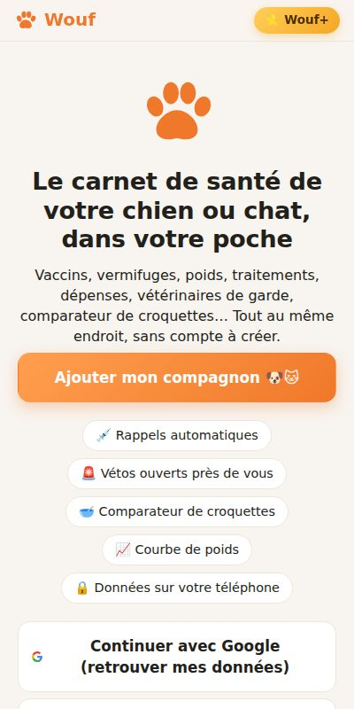
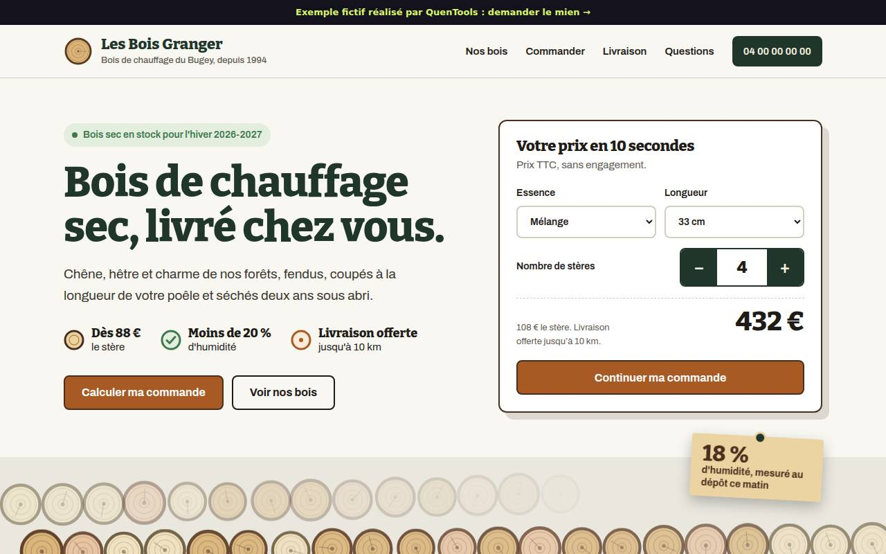

Santé · Infirmières à domicile
Infikit
Problème : tournée, ordonnances, cotations et comptabilité éparpillées. Solution : tout dans une app de poche qui marche hors connexion, avec sauvegarde chiffrée.
Ouvrir Infikit →Chaque projet part d’un problème concret. Voici comment je l’ai résolu, ce que l’outil fait, et où il en est aujourd’hui.
Le carnet de santé papier se perd, on oublie les rappels de vaccins et de vermifuges, et en urgence on ne sait pas quoi faire ni quel vétérinaire est ouvert.

Résultat : une application complète, en ligne sur son propre domaine, avec un compte Instagram alimenté chaque semaine. Comparable à un projet facturé plusieurs dizaines de milliers d’euros en agence.
Un compte-titres ici, du crowdlending là, de l’immobilier fractionné ailleurs : impossible de savoir combien on a vraiment, ni quand chaque projet rembourse.

Toujours les mêmes repas, un frigo plein d’ingrédients qu’on ne sait pas quoi faire, et un budget courses qui dérape chaque mois.

Un vendeur de bois de chauffage passe ses soirées au téléphone : combien coûte le stère, en quelle longueur, est-ce que vous livrez chez moi ?

Entreprise fictive : textes et prix sont des illustrations. Le même principe marche pour un paysagiste, un traiteur ou un loueur de matériel.
Problème : tournée, ordonnances, cotations et comptabilité éparpillées. Solution : tout dans une app de poche qui marche hors connexion, avec sauvegarde chiffrée.
Ouvrir Infikit →
Problème : fixer son prix journalier et faire des devis propres. Solution : calculateur de TJM et générateur de devis et factures en quelques minutes.
Ouvrir Freelance Kit →Expliquez-moi votre besoin en 2 minutes : devis gratuit, prix fixé avant de commencer, première version à tester.
Demander un devis gratuit